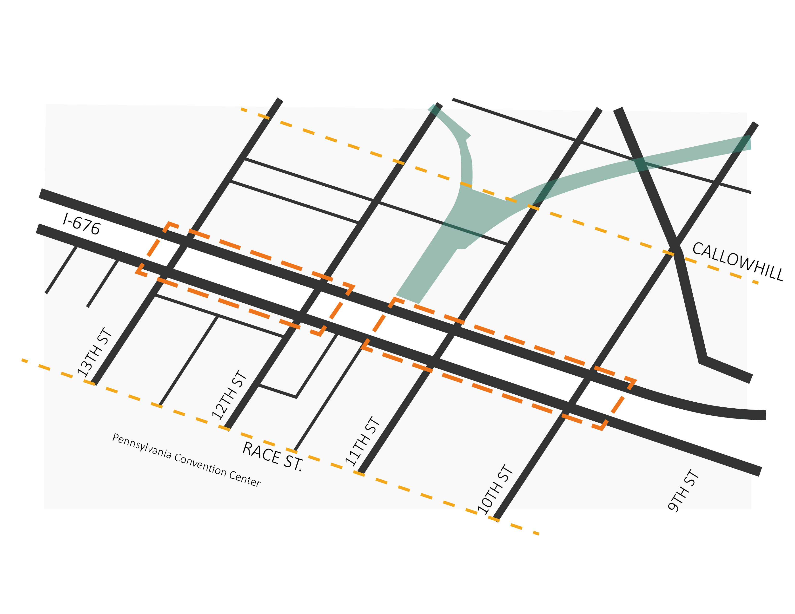
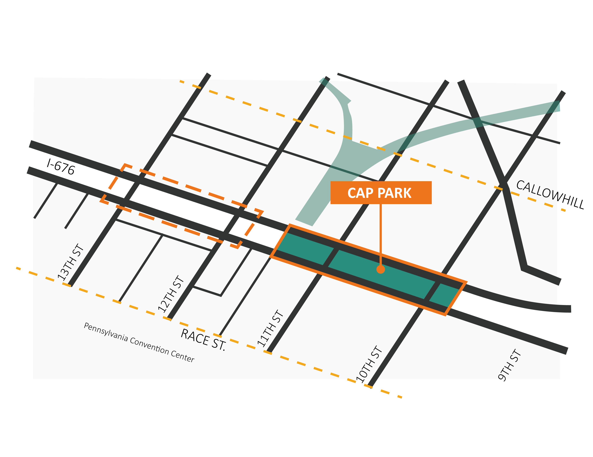
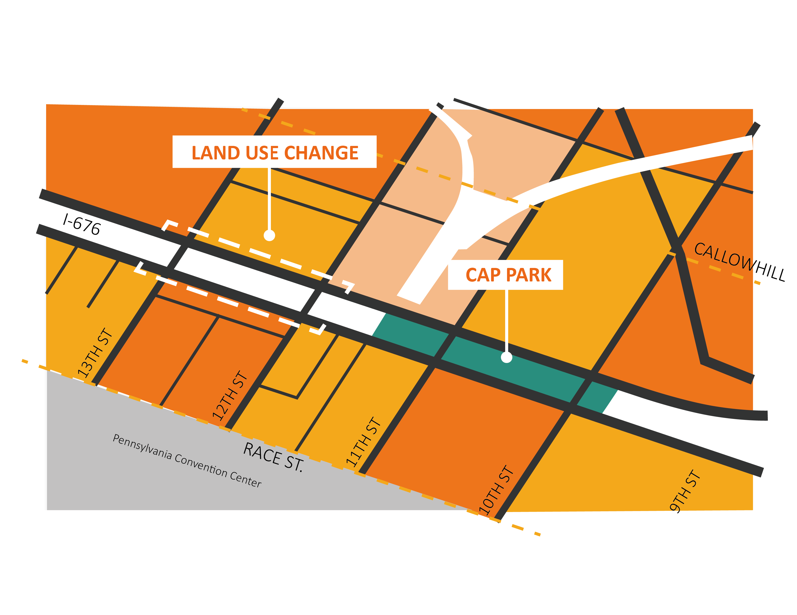
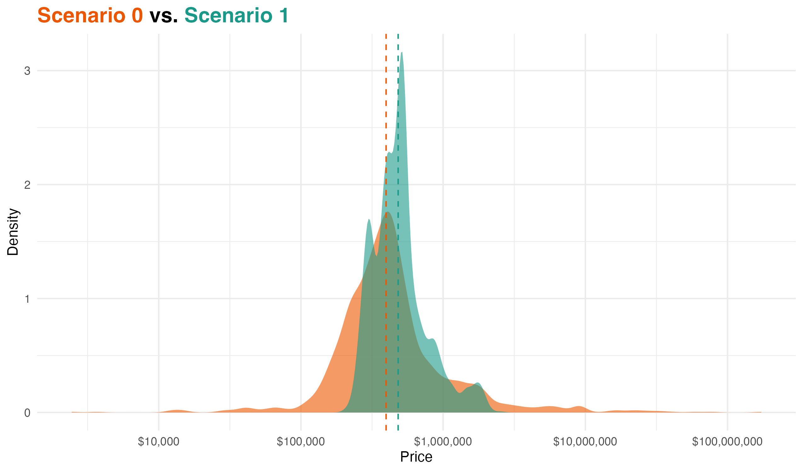
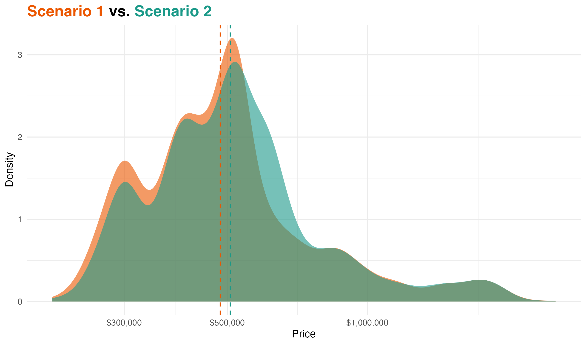
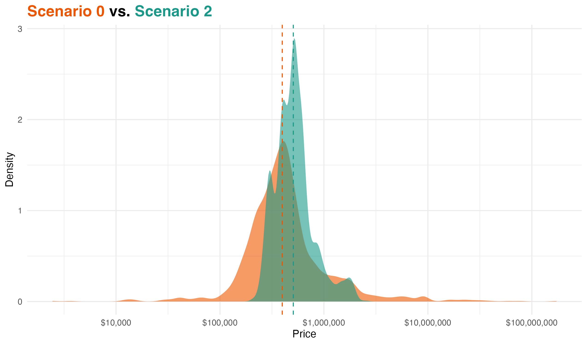

How will the Chinatown Stitch Project change the neighborhood?
The history of Philadelphia's Chinatown is deeply tied to the construction of I-676, whose lasting impacts—including displacement, pollution, traffic issues, and more recent challenges like gentrification and inefficient land use—continue to affect the neighborhood today.
Three Scenarios
This data-driven story map will provide information about the
estimated sales prices
of the properties in Chinatown and Callowhill regions generated by the
predictive model we developed to evaluate the
effectiveness of the Chinatown Stitch as well as to identify potential
changes it will have in the neighborhood.
The housing market of our study area will be revealed under these different alternative scenarios listed below:
🛣 Highway remains a physical and economic barrier, dividing Chinatown and limiting connectivity.
📉 Property values show spatial imbalance — sale prices increase significantly with distance from I-676 on the south side, but decline with distance on the north side.
🧭 Reinforce unequal development patterns, with opportunity concentrated in the south and disinvestment in the north.
🚫 No intervention means no shift in trajectory — existing fragmentation and disparity persist as the baseline.

Scenario 1:
A First Step: Cap I-676 to Reconnect Chinatown Community
🏞 Add 3 new caps over I-676 — one serves as a Cap Park, while two others reconnect streets and improve circulation across the highway.
🚶 Restore physical connections between north and south Chinatown, enhancing walkability and spatial continuity.
📉 Help stabilize fragmented property values, narrowing the north–south gap, though overall price growth remains limited without land use changes.
🪧 Signal future reinvestment potential, but remains a modest intervention in the absence of structural development policies.

Scenario 2:
Turn Connection into Growth: Cap Park + Alternate Zoning / Land Use
🧩 Building upon Scenario 1, Scenario 2 combines highway cap park with strategic zoning and land use changes across both sides of I-676.
🏪 Under the commercial perspective, reclassify part of vacant and industrial parcels as commercial or commercial–mixed-use properties, supporting walkable retail and local services.
🏘️ Under the residential perspective, reclassify part of Single-Family residential and vacant lots as Multi-Family, expanding affordable housing options and increasing population capacity.
📊 Unlock more development value and lead to significant property price increases, especially where zoning changes align with better access and street connectivity.
⚠️ However, while the south shows notable value increases, the north continues to lag, reflecting persistent structural challenges that require further public investment in amenities and infrastructure.

Scenario.0 VS Scenario.1
What is the influence of the cap park?
Scenario 0 reflects the current conditions with no cap over I-676.
Scenario 1 adds a cap park to improve north-south connectivity and public space quality. The overall price change is limited, only slightly easing the north-south disparity.

Scenario.1 VS Scenario.2
What is the influence of the ensuing land use change?
Scenario 1 includes only the cap park.
Scenario 2 builds on it with further land use and zoning adjustments:
• Commercial perspective: Reclassify some vacant land & industrial properties as commercial or commercial mixed-use properties.
• Residential perspective: Reclassify some vacant land & single-family properties as multi-family residential properties.
Scenario 2 results in a more notable price increase than scenario 1, but spatial imbalance remains a challenge.

Scenario.0 VS Scenario.2
What is the influence of the cap park and the ensuing land use change?
Scenario 0 serves as the baseline.
Scenario 2 combines a cap park with land use /zoning reclassification to drive both spatial connectivity and value restructuring. It generates a notable rise in property values, but it further widens the gap between the north and south sides.

SUMMARY
From Scenario 0 to Scenario 2, the median price rose by more than 30%, indicating a clear market shift—not just in isolated hotspots in the north or south, but across the entire study area.
While Scenario 1 helped stabilize the market, Scenario 2 demonstrates that substantial value gains require combining the cap project with broader structural zoning strategies.
However, growth remains uneven, and the north side will still require targeted support or policies to fully benefit from future changes.
Note that the purpose of this study is to try to discover the potential trends/shifts in the housing market instead of accurately predicting exact value of each property within the study region due to the limitations of the modeling methods as well as other factors beyond our control. These scenarios are alternatives to reality and not the future market as the future is highly unpredictable.